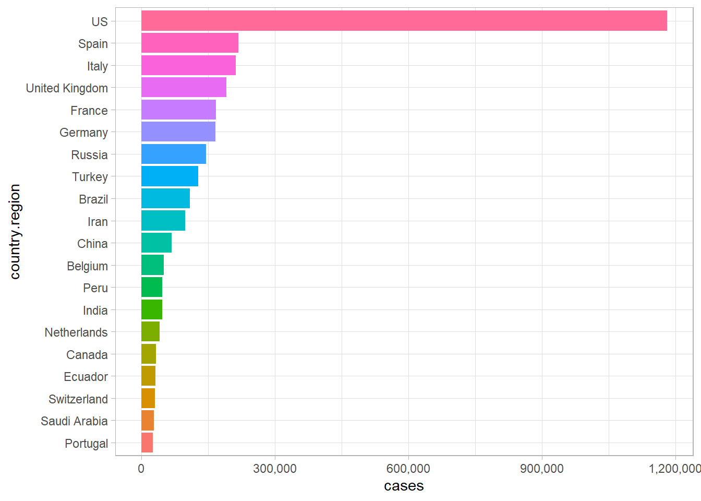
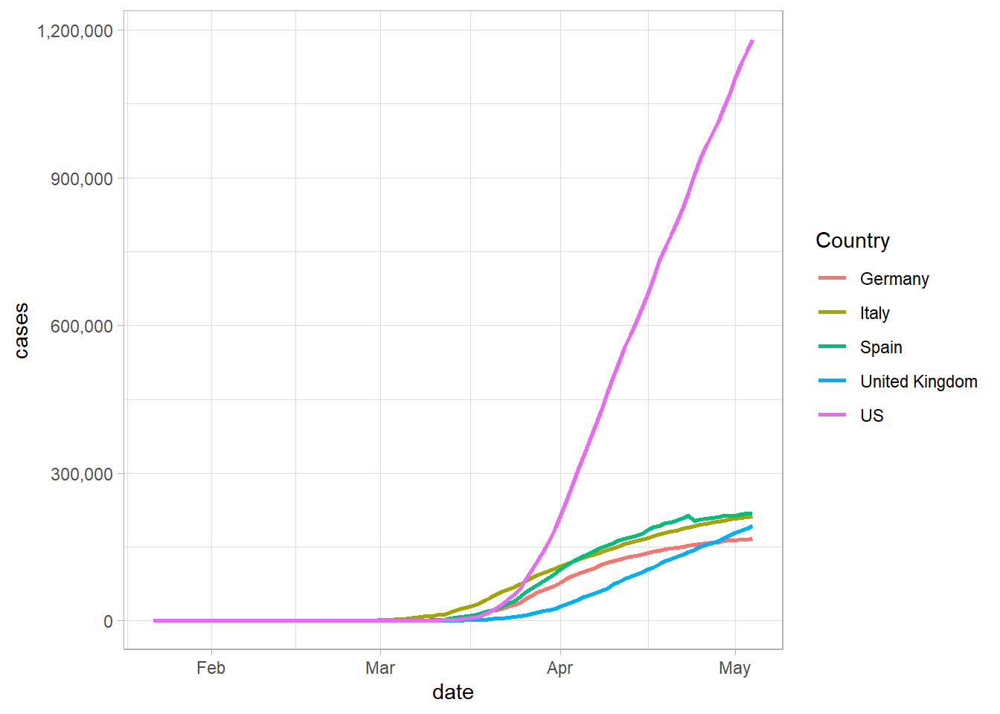
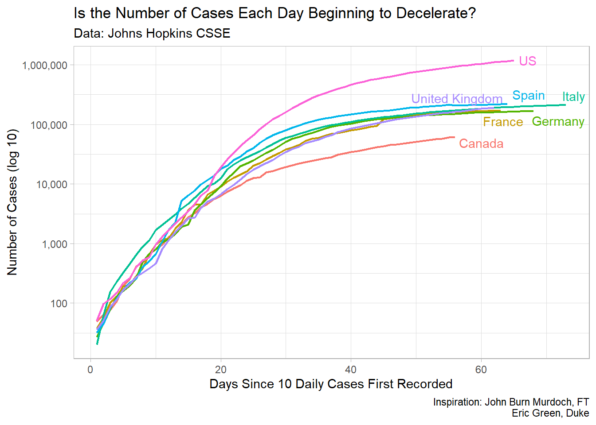
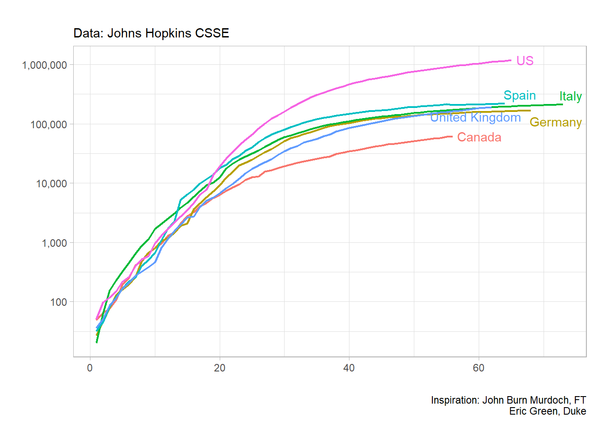

Week01-Intro (Fixed Janitor Error)
Chris Papalia
4/12/2020
This document will walk you through how to create a plot similar to the one that you see below. It will use the data from Johns Hopkins University to loosely replicate a plot that shows the outbreak of COVID-19 for some countries, and for four provinces in Canada.
Here is the plot that we will try and replicate:
Financial Times Plot of Deaths on a Log Scale
Then, in Week 2, you will be able to create your own plots to show the outbreak in an area that you’re interested in.
Creating a Plot in R
1. Load Libraries and Set a Theme
In order to work with R, you’ll need access to many different packages that allow the user to use different tools. Each of these packages below has a function. Most importantly, the tidyverse package allows the user to import, tidy, transform, and visualize data using commands that are relatively intuitive.
The other packages each perform some function in this module.
library(tidyverse)
library(janitor)
library(lubridate)
library(ggrepel)
library(knitr)I have set the theme to light to avoid the gray background in graphics.
theme_set(theme_light())2. Load the Data
We will load the data using the data source of the following website Johns Hopkins CSSE Map
In order to get the data, we will use a link to the Johns Hopkins CSSE data in GitHub. The following command will load the data for us using the read_csv command.
covid_cases <- read_csv("https://raw.githubusercontent.com/CSSEGISandData/COVID-19/master/csse_covid_19_data/csse_covid_19_time_series/time_series_covid19_confirmed_global.csv")Once you run this line of code, you should see the covid_cases object in the Environment pane. If you click the object in the environment pane, you can view the data in a tabel format in the Source pane in the upper left.
3. Tidy and Transform the Data to Make a Plot
A. Clean column Names
You’ll notice that when we view the file, it is not tidy data because each day is listed as a column rather than as an observation. We can inspect the column names with the command below.
colnames(covid_cases)[5:ncol(covid_cases)]It’s also important to see that the dates are not in a nice format. We would pefer to use YYYY-MM-DD as our date input, so we will use the following command to rename the columns with the dates formatted correctly.
old_names <- colnames(covid_cases)[5:ncol(covid_cases)]
new_names <- parse_date(colnames(covid_cases)[5:ncol(covid_cases)], "%m/%d/%y")
covid_cases<- covid_cases %>%
rename_at(vars(old_names), function(x) new_names)Then we will reshape the data into a long tidy format using the pivot_longer() command. Now for each county observation (row), we will move the dates under the country. We will call this new dataset covid_cases_tidy. You can inspect it in the environment to see how it looks different from the covid_cases that we input from GitHub.
covid_cases_tidy <- covid_cases %>%
pivot_longer(
cols = -`Province/State`:-Long,
names_to = "date",
values_to = "cases"
) %>% as_tibble() %>%
mutate(date = as.Date(date)) %>%
set_names(tolower(make.names(names(.)))) # The janitor package was broken in the cloud, here is the fixB. Transform and Summarise the Data Using the Pipe Operator
For the particular plot we’re trying to make, we only want to use the data for the Provinces in Canada. So we need to filter the data to look only at what we’re interested in. Once again, we can see the data by pressing on the covid_cases_tidy object in the environment pane in the upper right.
Let’s look at the data of the top 10 most affected countries in the world and find that data using some commands that we can find in the dplyr package, which is part of the tidyverse. Since we know the data is tidy, that being each row represents a country’s day of total cases, we can use use some statistical analysis to pull some information out of the data
Let’s see what are most affected countries are in the world are, and how many cases they have. We will use the pipe operator %>% to use the previous output at the input in the next line of code.
| country.region | cases |
|---|---|
| US | 1012582 |
| Spain | 232128 |
| Italy | 201505 |
| France | 167605 |
| United Kingdom | 161145 |
| Germany | 159912 |
| Turkey | 114653 |
| Russia | 93558 |
| Iran | 92584 |
| Brazil | 73235 |
| China | 68128 |
| Belgium | 47334 |
| Netherlands | 38416 |
| India | 31324 |
| Peru | 31190 |
| Switzerland | 29264 |
| Canada | 25761 |
| Portugal | 24322 |
| Ecuador | 24258 |
| Saudi Arabia | 20077 |
Create a Summary Plot
Now that we have this data output, let’s make our first plot of the data. This will be a bar graph that will show the twenty most-affected countries in the world. It will essentially take the output of the last code and use it to make a plot.
Some things to keep in mind. The output is a tibble which is a type of data frame that R likes work with. The data was initially 25872 by 6 tibble and it’s been converted into a 20 by 2 tibble.
The following plot, take the data from the chart and creates a plot to show the countries that are most affected by the COVID-19 outbreak.

COVID-19 Outbreak In A Plot
Now that we have shown the countries most affected by COVID-19 in a summary plot, let’s look at how some of this data in a time-series plot. In general, the growth of COVID-19 is an exponetial growth curve. For instance, we can look at some of the most affected countries in the world and see how their growth curves look. Let’s choose, the US, Spain, Italy, and the UK.
We can view this data using the filter command, and then plotting it. One of the nice features in R, is that we are still using the basic dataset that we started with rather than needing to change it a bunch and create new sheets like we might need to in Excel.

In this plot, we can see the different growth rates of the countries, but it’s difficult to determine where on the growth curve these countries are, so it’s helpful to make a plot by the number of days since a certain number of cases.
COVID-19 Plots
The plots below replicate many of the features of the financial times plot. Using RStudio.Cloud and by following along, you will be able to replicate the main features of the plot.
covid_cases_tidy %>%
filter(country.region %in% c("US", "Italy", "Spain", "United Kingdom", "Canada", "Germany")) %>%
group_by(country.region, date) %>%
summarise(cases = sum(cases)) %>%
mutate(daily_cases = c(cases[1], diff(cases))) %>%
filter(daily_cases >= 10) %>%
mutate(days = 1:n()) %>%
mutate(label = if_else(days == max(days),
country.region,
NA_character_)) %>%
View()

Goals for the next Graph
So, you’ve just made a some plots using my commands.Now let’s spend a couple minutes using the labs() function to make nicer labels and headings for some of the plots. Let’s start with the plot below. You can reference previous plots to use the command and run the chunk to see how each label works. We will use some fancier labels next week to manipulate a plot.
For the next plot, take some to inspect the data to see what’s available using the viewer in the top left plane by clicking on the object. You’ll notice that not every country has provinces or states listed, so you’ll need to try and select a few countries that you’re interested in.
You can then modify the commands in the plot below:

For future data plots, you can go to the GitHub repository for more data. You can take a look and explore the deaths from COVID-19 here: https://github.com/CSSEGISandData/COVID-19.
This link will take you to the COVID-19 Time Series Data for cases in the US and globally. Refer to the code at the top of the page to read data into R. I’ll do this with you in our live session.